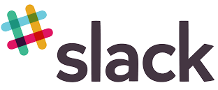

MoSCoW Analysis
| Must |
|---|
| Extend the functionality of the existing app |
| Manage some functionality of the website |
| Implement group owned premium bonds as a financial product |
| Implement a web interface which surrounds group owned premium bonds, facilitating all required functionality including: setting up and managing a group, buying bonds as a group and checking for and receiving rewards |
| Mobile app must replicate some banking operations found online: check savings balances, check premium bond winnings. |
| Mobile app must implement group owned premium bond interface that allows for: checking group winnings |
| Have a simple modern interface attractive to the younger generation |
| Encourage younger audience to save |
| Have a modular and agile design |
| Legal agreement as to how the money would be split over a group ownership of bonds |
| Should |
| Mobile app should replicate all banking operations found online: check savings balances, create new account, make contributions to account, withdraw from account, buy premium bonds, check premium bond winnings. |
| Mobile app should implement group owned premium bond interface that allows for: checking group winnings, contributing more to groups "pot", withdrawing money from groups "pot" |
| Market NS&I |
| Could |
| Manage all the functionality of the website |
| Facebook integration to find friends for group owned premium bonds |
| Online help (basic walkthrough) |
| For persona 1 an attractive point could be showing a potential yield using a mathematical model (savings simulator) |
| Won't Have |
| API to implement our new functionality |
| Have required interactions outside of the mobile application (eg. telephone call) |
| Be catered towards an older audience |
| Integration to NS&I's backend |
Deliverables
Our financial product, group owned premium bonds, must be realised fully through an extension of NS&I's web interface to facilitate all relevant interaction with this new product. Additionally there must be functionality within the mobile app to facilitate some, if not all of these same interactions.
We must deliver a mobile app which offers most, if not all the features of a modern banking app. Features will include: logging in to a user account, checking savings accounts, starting new accounts, buying and checking sole owned premium bonds, and managing group owned premium bonds.
Tangible Deliverables
- Mobile application for NS&I
- Log in screen
- Interface to manage and open savings accounts
- Interface to buy and check sole owned premium bonds
- Interface to manage group owned premium bonds
- Join groups
- Create groups
- Contribute to groups
- Check winnings
- Web interface to allow users to interact with group owned premium bonds
- Join groups
- Create groups
- Contribute to groups
- Check winnings
- Back-end information system to store data to be shared across both systems.
- User accounts must be consistent across app and web interface
Git
We have decided to use git as our version control system, there are many reasons o why we came to such a decision:
- Everyone in the team is familiar with it
- There is a lot of information about it
- Intergration with IDE's
- Privacy
Xamarin
We have decided to use Xamarin for our development as it allows multiplatform development. Xamarin apps have access to comprehensive range of functionality which includes platform-centric capabilities sich as iBeacons and Android Fragments. Xamarin applications are compiled for native performance so there are no underlying issues with performance on a specific platform. Another benefit to using Xamarin is Xamarin forms which is an api that allows a developer to build user interfaces, interfaces designed using Xamarin.Forms require much less time to develop so our team could concentrate on other parts of the project.
Visual Studio
Visual Studio is the IDE that we are planning to use for the project. Visual studio integrates directly with Xamarin and lately its development is possible both on a mac and a windows computer which is perfect for our team as we have mac and windows users on the team.
C#
C# is a powerful object orientated language that was based on .net. There are more reasons to using C# other then the fact that it is used in Xamarin application development. C# is a very type safe language which would mean fewer type related errors, it has a large library of functions which could be easily implemented by a programmer and there is no need to worry about memory leaks happening unlike C++.
SQLite
From all of our conversations with the client it looks like we are not going to have access to the NS&I's backend. This would not be possible as it is essentialy a bank that stores very private information. SQLite will allow us to simulate NS&I's backend so that our application would later on be intergrated into their system by their onsite engineers.
Testing Strategy
Given the context of the problem, we have realised that testing will be a very important stage of our project.
This project would later on ideally be integrated into the back-end of National Savings and Investments,
this would involve vulnerable and important data which should not be mishandled by the application and
everything should perform as expected.
To test our application, we are going to first of all use NUnit and Moq to do the unit tests. NUnit and Moq are one of the most famous unit
testing frameworks available for C#. Coincidentally Xamarin has an API that we are going to be able to use to perform NUnit tests, this API is called
Xamarin.UITest which basically contains a main entry point for application testing.
When testing the database, we are not going to have direct access to the actual database so instead we would be testing our SQLite code.
We are planning to use moq unit test in order to test SQLite.
User acceptance tests are very important parts of agile development so we are planning to embrace them to the full. We aim to begin regularly
incorporating user acceptance testing into our Scrum sprints as soon as we have completed the user interface in the front-end, and interaction
with the system becomes possible. We are planning to deliver user-acceptance tests to our clients on a regular basis so that our clients can take
these tests into account when considering ways in which we can improve our application for the better.
One of our key considerations is security due to the data that we're handling and processing. To ensure the security a lot of testing would
have to be done security wise to make sure that problems that are due for example to SQL injection would not be allowed to occur.
- Create a more stable application
- More features would be accessible to the user
- Fewer bugs
- Fulfilling client requirements
- Better stability
Applications

Slack was one of the obvious choices for our group when it came to collaboration. Slack facilitates communication between team members through distinct, subject specific channels. We were able to set-up multiple channels where one could be used to announce any progress that we have made to teammates and the client and another to arrange group meetings.

We have decided to keep all of our documentation on google drive, using folders and different documents we were able to sort and organise all of our documentation for the project. The files are automatically saved and the documents are not reliant on one member of the team to be kept and updated. Google drive also allowed us to simultaneously work on one report which saved a lot of our time.
Trello is a free of charge web-based project management application that uses boards to give a quick overview of the tasks we have completed and have yet to be completed. On these tasks we can set someone that is responsible and give a certain deadline for it. Our reason for picking Trello as one of our mode of communications as it has integrations with github and slack making changes in any mode available in all so that we can make sure that nothing is missed. Also as students, we noticed during such projects it was difficult to find time for the whole team to sit down and discuss the project. Hence, when approaching this project we would update trello daily to keep everyone informed and also for everyone to keep track of their tasks at hand. Trello also sends out notifications when deadlines are near saving us the hassle of chasing a certain team member for the work for updates. Also if due to some circumstances it cannot be finished in time the workload can be easily shared among the team.